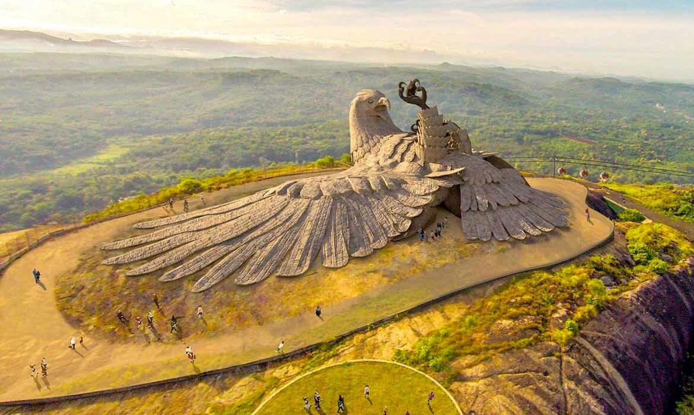

(05 Nights / 06 Nights) 1N Cochin - 2N Munnar - 1N Thekkady – 1N Alleppey
Day 01 - Arrive at Cochin : On arrival at the Cochin seaport/airport/railway station, meet our representative who will be there for your warm welcome and afterwards to transfer you to your already booked hotel in Cochin. Check in at the hotel and the rest of the day is free at leisure. During your free time, you can walk out to explore the surroundings, interact with locals, visit local markets or stay back in hotel to take pleasure of its modern amenities. Or if time allows proceed for Cochin Sightseeing includes Chinese Fishing Nets, St.Francis Church, Jewish Synagogue, and Dutch Palace. Evening sunset cruise in the backwater of Cochin (own cost).
Day 02 - Cochin to Munnar : Morning after breakfast drive to Munnar. Visit Cheeyapara and Valara water falls on the way to Munnar. Throughout the journey enjoy beautiful streams small waterfalls, Rubber, Pepper cardamom and Tea plantations and thick forests; God has blessed his own country with incomparable beauty on arrival at Munnar check in to Hotel. At leisure. Overnight stay in Hotel/resort.
Day 03 – Munnar : Morning after breakfast proceed to enjoy full day sight seeing tour of Munnar. Rose Garden, Tea Garden, Photo Point, Honeybee Tree, Madupetty Dam/Lake, Echo Point & Kundala Dam/Lake. Overnight stay at hotel/resort.
Day 04 - Munnar to Thekkady: Morning after breakfast , continue your journey to Thekkady reaching there in few hours. Check into the resort and relax. Later on proceed for a spice plantation tour. Explore wide variety of spices in kerala. You may also shop few varieties. Travel by boat on the Periyar Lake to spot the elephants and avifauna for which this reserve is well known. Boat cruises and sunrise and sunset are particularly recommended. Back to the hotel for an overnight stay..
Day 05 - Thekkady to Alleppey : Morning after breakfast leave for Alleppey, Allappuza famous for its backwaters. Visit Alleppey beach, sunset and enjoy shopping if staying in Alleppey. Visit Alleppey Beach and Backwaters and enjoy shopping if staying in Kumarakom. Enjoy all the amenities of this hotel/resort for a day which includes fishing in the backwaters (depends on the hotel/resort selected) Overnight stay at same hotel/resort".